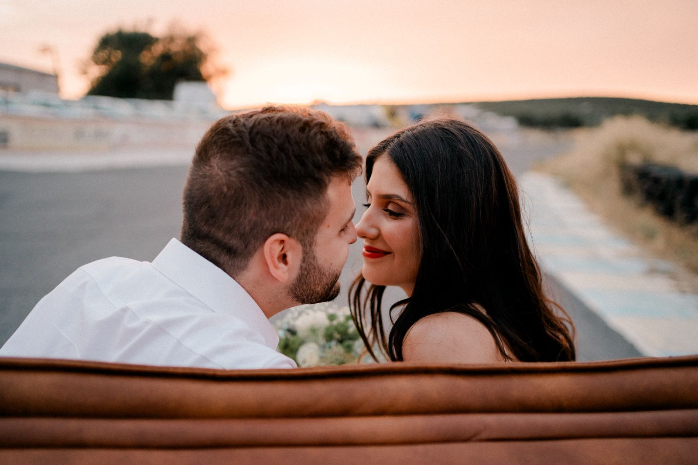
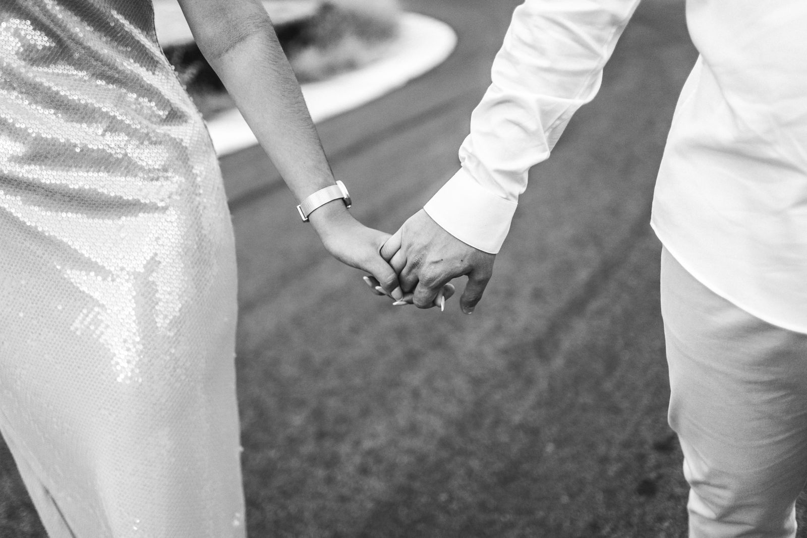
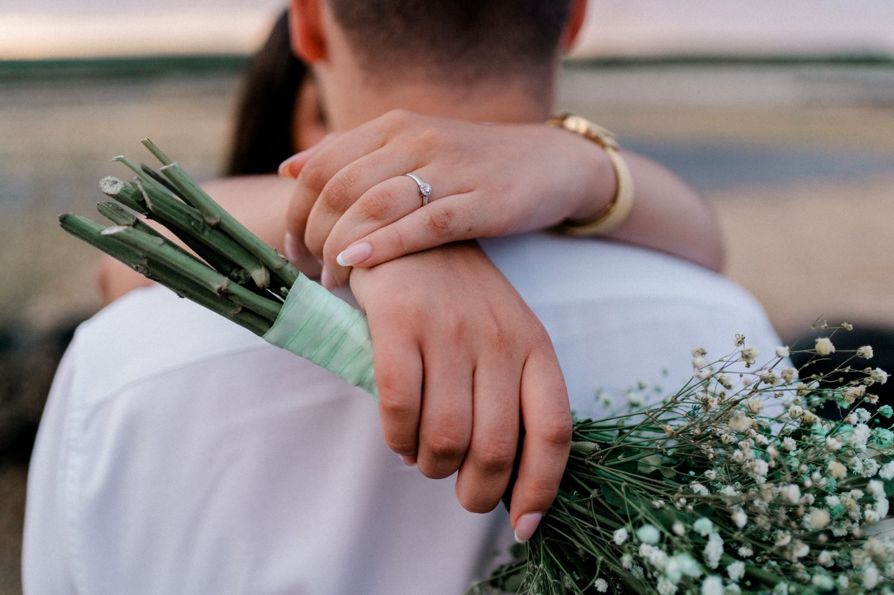

12:00h
Bienvenida
Junto con sus familias
06 · Diciembre · 2026
“Por siempre es un santiamén estando tú.”
Cuenta atrás
Nuestra historia
Durante años caminamos por las mismas sendas sin imaginar que Dios estaba escribiendo una historia que aún no alcanzábamos a comprender. Si alguien nos hubiera dicho que terminaríamos aquí, probablemente ninguno de los dos lo habría creído.
Pero cuando dos corazones enamorados de Jesús se encuentran, todo lo demás deja de importar. Descubrimos que aquello que más nos unía no eran nuestras diferencias ni nuestras coincidencias, sino una misma esperanza, una misma fe y unas cicatrices que Dios transformó en testimonio.
Hoy sabemos que cada paso, cada espera y cada proceso nos trajeron hasta aquí para glorificarle a Él, el verdadero Autor de nuestra historia.

El gran día
Vilanova del Vallès · 06 de diciembre de 2026
Bienvenida
Ceremonia
Aperitivo
Banquete
Baile nupcial
A celebrar
“Enséñanos de tal modo a contar nuestros días,
que traigamos al corazón sabiduría.”
Confirmación
Nos hará mucha ilusión compartir este día contigo. Para ayudarnos con la organización, te agradeceríamos que confirmaras tu asistencia rellenando el formulario.
Confirmar asistenciaRegalos
Vuestra compañía es el recuerdo que más deseamos guardar de este día. Si además queréis acompañarnos en el comienzo de esta nueva etapa, podéis hacerlo con mucho cariño aquí:


Información útil
Nos encantará veros especialmente elegantes. El color blanco queda reservado para la novia y los chalecos para el novio.
Sí. Mas de Sant Lleí dispone de aparcamiento para los invitados.
Agradeceremos recibir vuestra confirmación antes del último día de octubre.
Sí. Los invitados con movilidad reducida podrán acceder en coche directamente hasta la zona de bienvenida. Después, el conductor podrá bajar el vehículo al parking habilitado.